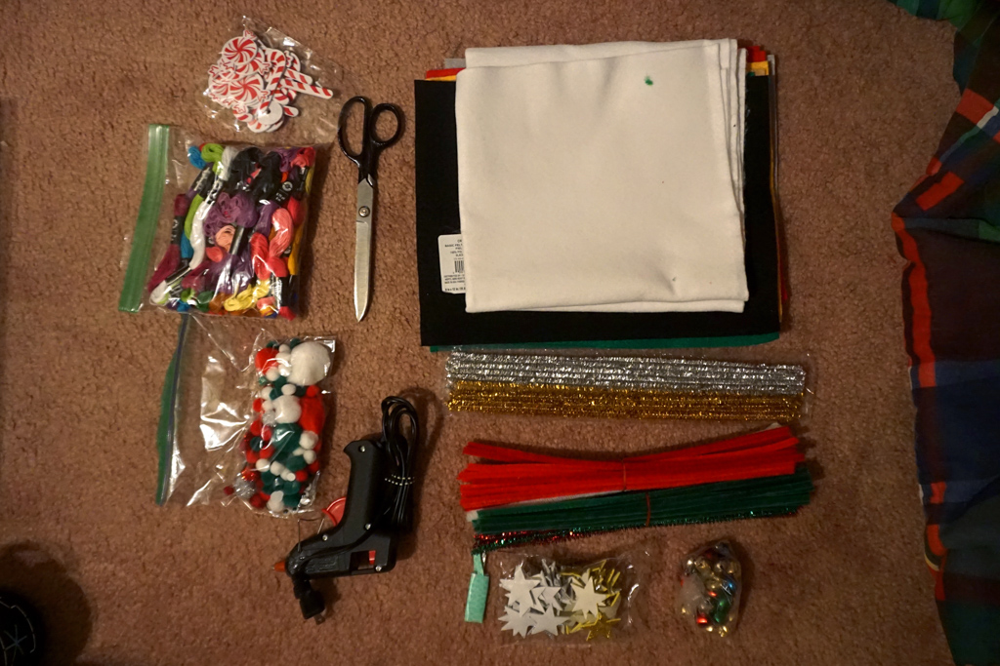
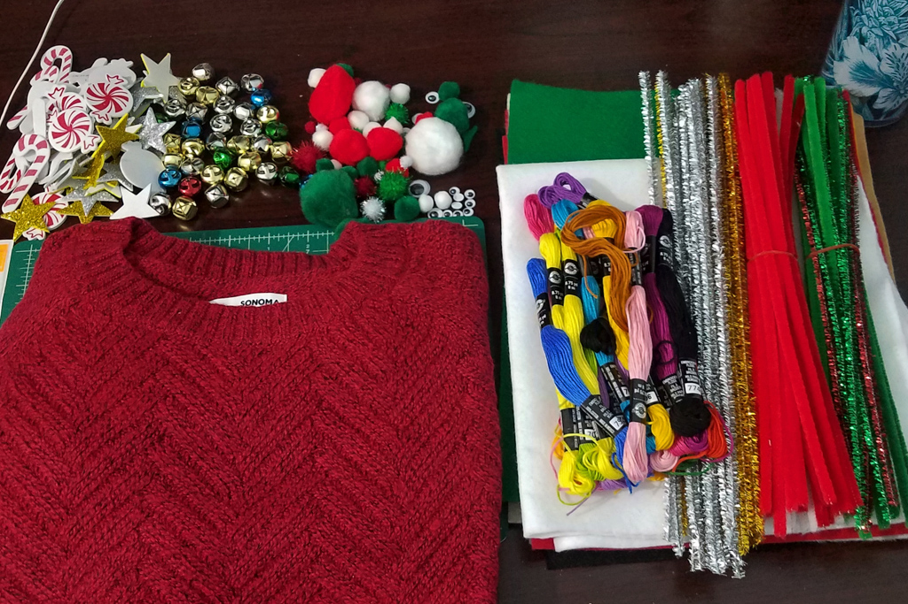
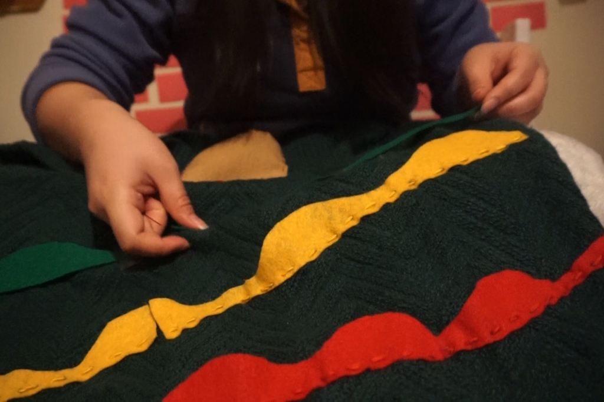
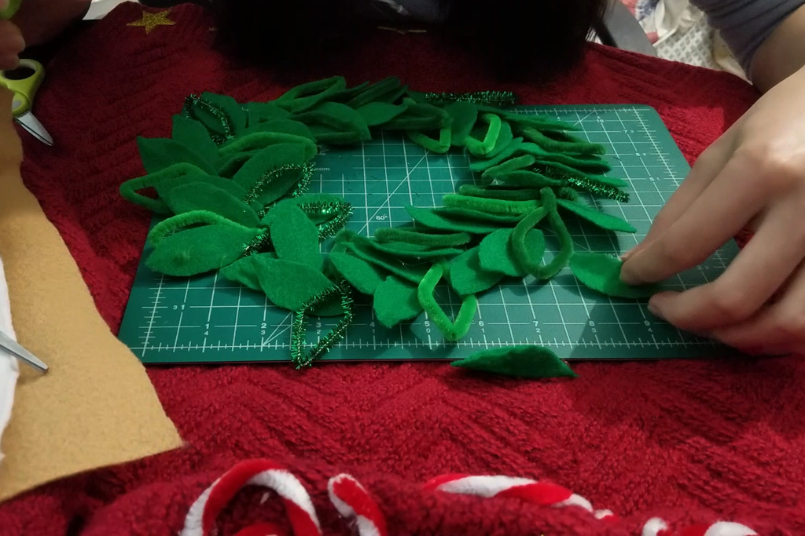
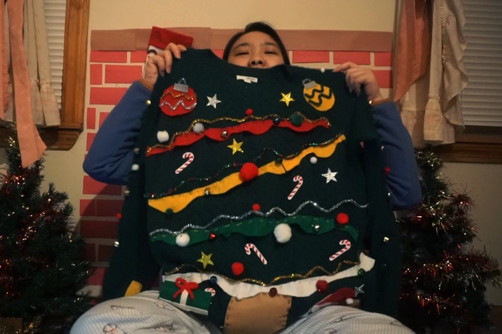
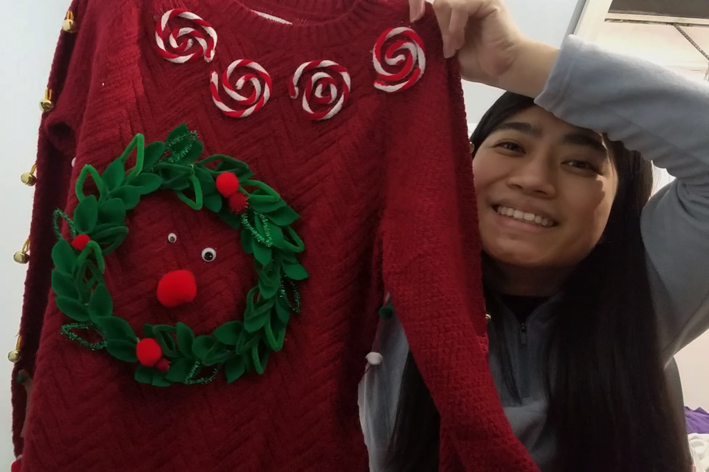
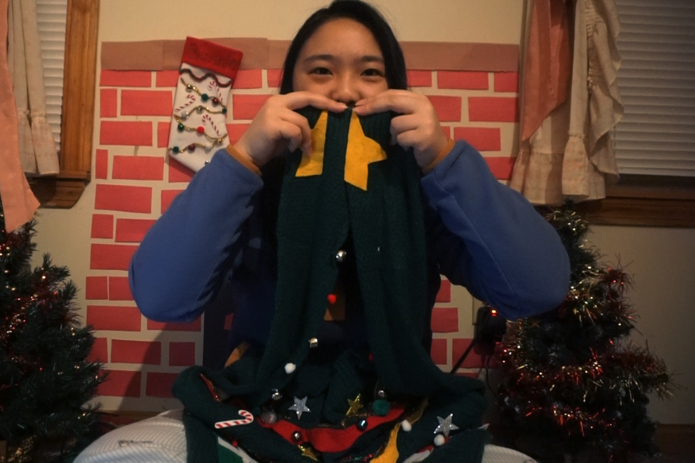
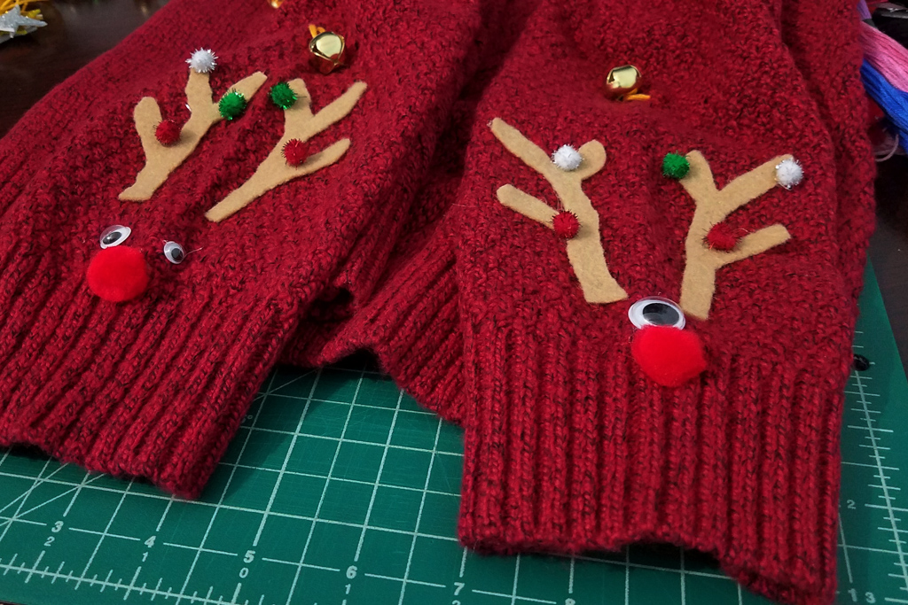

7 Days of Christmas - DIY Christmas Sweaters
Dec 20 - Written by Bonnie and Emily
We made some adorable stockings yesterday but today it's time for a whole different turn-- making ugly sweaters!
Join us for day two of our Seven Days of Christmas series and make these ugly Christmas sweaters to wear on Christmas day with us! Since neither one of us has ever owned an ugly Christmas sweater, we thought it’d be fun to make them ourselves rather than purchasing one.

Bonnie's Materials

Emily's Materials
Of course we would love to make everything from scratch but sadly our skills are not at the level needed to knit some sweaters. So, we opted to purchase some decently priced sweaters that we wouldn’t mind damaging with a variety of craft materials.
As always, we don’t always plan out our ideas so there was a lot of winging it and just going with the flow. Unlike Bonnie who came into this with the intention to make a Christmas tree sweater, Emily had no clue what she wanted to do. Similar to the DIY stockings, all she knew was she wanted to incorporate bells. With no better place than the sleeves, she spent more time than needed sewing on all the bells before going with the flow and seeing what other ideas she had for her sweater.
Bonnie on the other hand, sort of had a plan and just needed to find the right materials to use to execute said plan. With so many elements to add and having to do a lot of painstaking felt cutting and gluing, Bonnie’s plan became more ambitious than she initially thought. Not to mention the sweater saga where she found a massive hole in her sweater that she almost forgot to cover up with pompoms. Despite having a plan, all the random stickers and ornaments that were added turned into a messy collage of all the crafts materials that were laid out in front of her to make her ugly sweater.
Jumping from one idea to the next, Emily’s sweater is just a hodge podge of festive holiday things like reindeers, candy canes, bells, and a wreath. In her opinion, this non-cohesive mix of things is what makes her sweater ugly.


Ugly is not something we do even though the whole point of this craft is to make an ugly sweater. No matter how hard we tried to make our sweaters ugly, they still ended up pretty cute. More importantly, they jingle with every movement which will surely get one into the holiday spirit!

